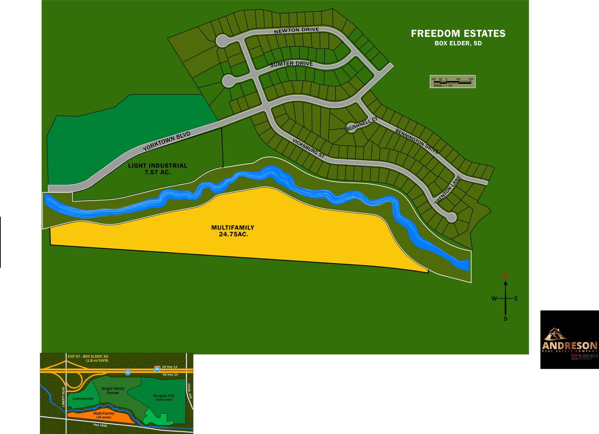

Hwy 1416 Commercial · Box Elder, South Dakota
34,600+ vehicles / day on I-90
Hwy 1416 Commercial · Box Elder, South Dakota
This exact corner
A 7.57-acre light-industrial / commercial tract on the Liberty Boulevard & Highway 1416 interchange in Box Elder — the gateway parcel of the Freedom Estates master plan, and 1.8 miles from the gates of Ellsworth Air Force Base, the future home of the B-21 Raider. Built for contractor shops, storage condos and lease-ready flex space where 34,600+ vehicles pass every day.

Master plan · Light Industrial · 7.57 acConcept visualization — not an approved site plan. Building sizes, layout and program are conceptual and subject to change. Information deemed reliable but not guaranteed.